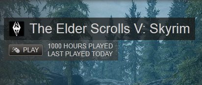

Motivation is a key factor in starting and wanting to finish a game because if you don't want to start or continue a game you most likely won't.  Motivation is needed because humans are naturally lazy, which causes us to use our judgment to determine if an activity is worth our time. Many factors influence how motivated we are to do things how important the task is, what we get from doing the task, and most importantly how much we enjoy the task. The importance of a task can motivate us to do it even if we don't want to, normally this applies to work and is the only reason we do it. What we get or obtain from accomplishing a task can also be a motivator even for a task we don't want to do, it's more we would do the task for the reward rather than for the task itself. The best motivator is enjoyment causing people to want to do a task for the sole purpose of doing the task. Video games have strong motivators behind them by being enjoyable rather than being hard work encouraging people to play.